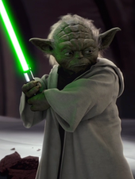

Yoda är en rollfigur i Stjärnornas krig-filmerna. Yoda är en runt 800-900 år gammal jediriddare och är ledare för Jediordens högsta råd. Han ledde kampen mot sitherna ända fram tills kejsaren dödade alla jedi (utom Obi-Wan Kenobi, Yoda och ett fåtal andra Jedi) efter klonkrigen. Yoda väljer då självmant exil på planeten Dagobah.
Copyright© Dart Vader Productions 2033